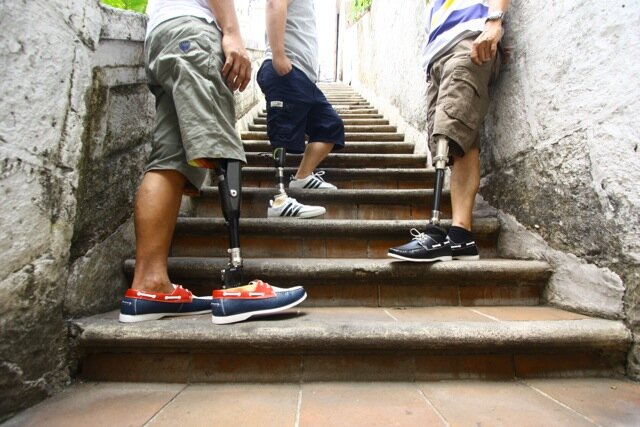
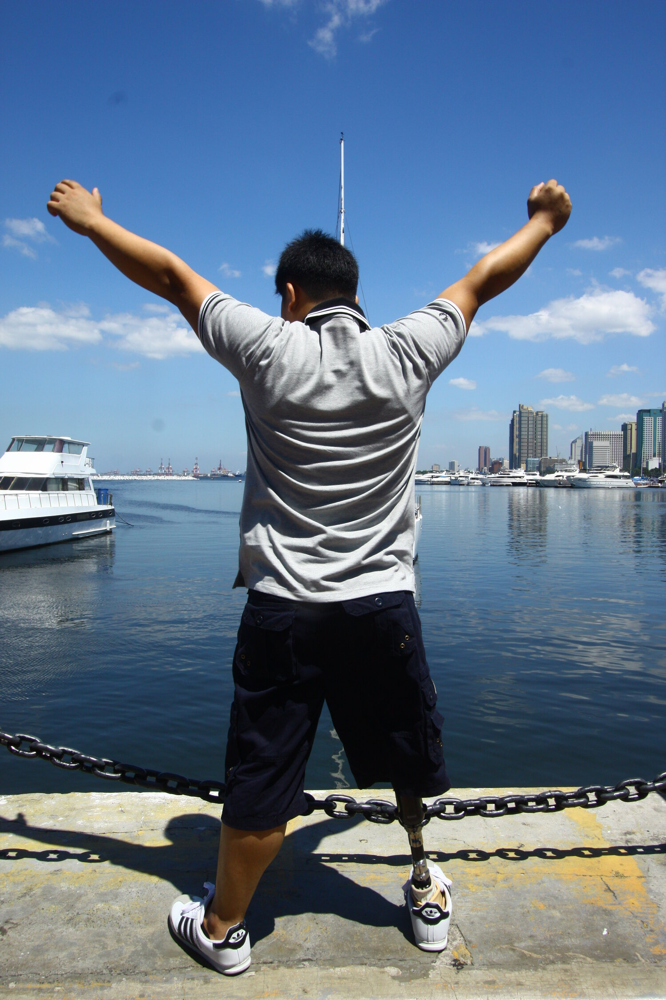

With very limited resources, ESE has shown that differentiated, country-specific, socially-responsible businesses providing private P&O services, alongside a regional supply and distribution business can shape markets and generate significant profit which can be used to support P&O services for the most disadvantaged and develop the P&O sector in general.

Like all new businesses, ESE had to pass through an early development phase and overcome many
challenges, but it has already made significant contributions to support the maintenance and development
of Exceed Worldwide charitable services.
We believe that ESE has proven, on a small scale, that social enterprise, new partnerships, innovative
thinking and seed investment can take the P&O sector on a journey to self-reliance. With greater
resources and support from a range of partners, our proven model can be greatly developed in Southeast
Asia and other regions.
Our aim is to scale-up our model and apply it, or variants of it, to other locations across the globe.
Exceed is seeking additional support to achieve this objective and we believe that the principles of the
ESE model can be applied to other elements of the wider Assistive Technology sector.
ESE is a market-led solution to a major health challenge. We recognise that this model will not be suitable for all countries at this point in time. However, if our model can scale-up in appropriate locations and generate much higher levels of profit, this income can be used to help establish and develop P&O and other assistive technologies in the world’s poorest nations.
 The ESE model applies to health systems, while international development strategy tends to engage with national Governments and countries. However, our innovative work with social enterprise mirrors and supports thinking of major players about the future of international development and development aid.
USAID’s strategic ‘Journey to Self-Reliance’ (J2SR) approach aims to ‘build countries’ capacity to address their own development challenges and work toward a time when foreign assistance is no longer necessary.’
‘Africa and Europe – a new partnership for development, peace and a better future’ (often referred to as
a Marshall Plan with Africa), published by the German Federal Ministry for Economic Cooperation and
Development envisages a new relationship between the EU and Africa and emphasises the role of the
private sector –
‘The focus will be on fair trade, more private investment, more bottom-up economic development, more
entrepreneurial spirit and, above all, more jobs and employment.’
The model, which Exceed Social Enterprises is pioneering, is in essence quite simple. Funders and/or
investors with a philanthropic outlook provide seed funding to take what is now a tried and established
business model to the next level by investing in capital, human, technical, and marketing resources.
This will allow ESE management to use the huge amount of knowledge gained over the last few years to
grow the business in existing and new markets. As the business grows and becomes more profitable, it
will be able to finance future growth by normal business methods and generate much larger profits. These
profits can be used for social good by supporting the development and expansion of the P&O sector, offer
choice and provide a range of accessible services for all, including the poor.